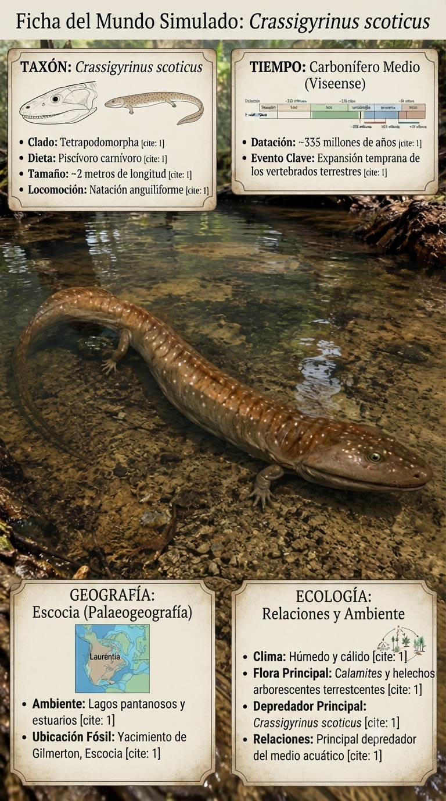
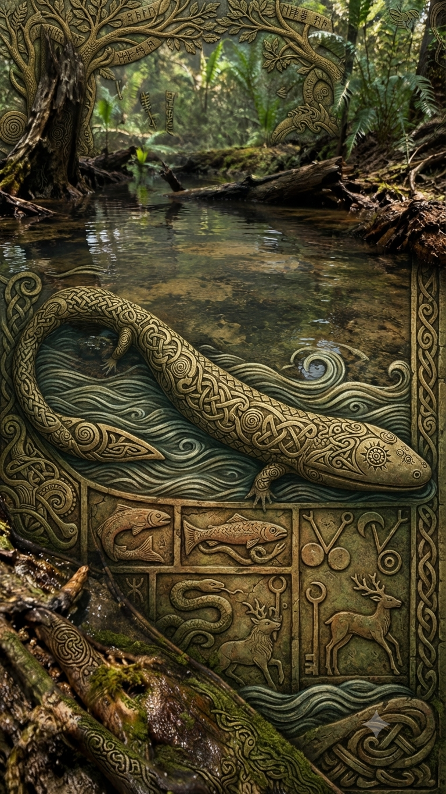
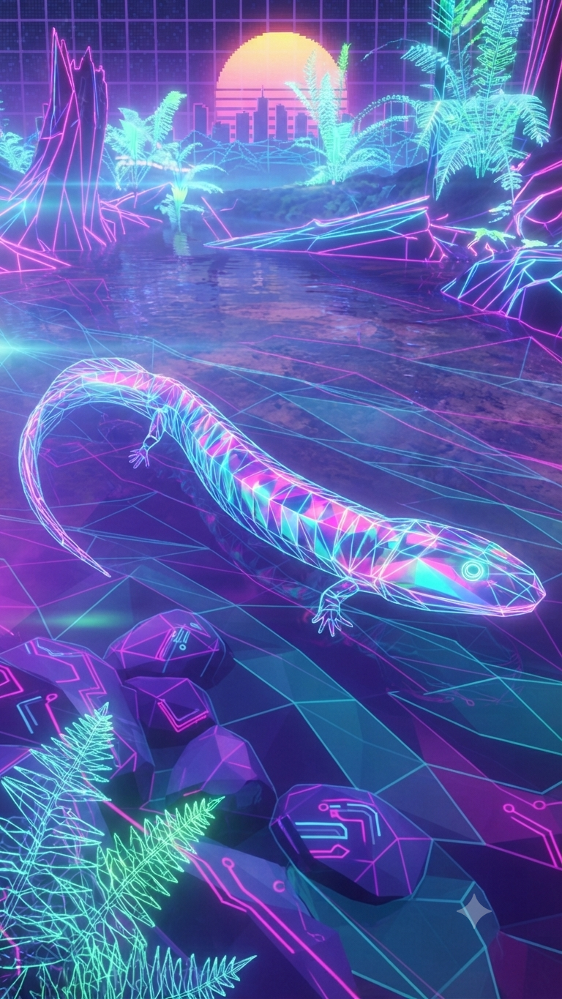

Paleoficha de PalEntropía



TAXÓN:
Crassigyrinus scoticus
CLADO:
Tetrapoda (Incertae sedis / Stem-tetrapod)
DIETA:
Carnívoro / Piscívoro (depredador de grandes presas acuáticas).
TAMAÑO:
Entre 1,5 y 2 metros de longitud.
LOCOMOCIÓN:
Acuática obligada; cuerpo alargado y musculoso con extremidades muy reducidas.
TIEMPO:
Carbonífero Superior (Serpukhoviense), aproximadamente hace 325 millones de años.
GEOGRAFÍA:
Euramérica, especialmente las tierras bajas de Escocia.
EQUIVALENCIA PALEOGEOGRÁFICA:
Humedales tropicales con abundantes canales y elevada acumulación de sedimentos orgánicos.
AMBIENTE PALEAOECOLÓGICO:
Bosques pantanosos dominados por licópsidas gigantes y extensas redes de canales de agua dulce.
ECOLOGÍA:
• Flora: Bosques pantanosos dominados por Lepidodendron y otras licópsidas gigantes.
• Fauna secundaria: Peces de agua dulce, tetrápodos basales y grandes artrópodos característicos del Carbonífero.
• Nichos: Depredador acuático de emboscada. Su enorme cráneo, las poderosas mandíbulas y un cuerpo hidrodinámico le permitían actuar como un auténtico "torpedo" en los canales del pantano, capturando peces y otros tetrápodos.
• Relaciones: Representa una rama altamente especializada de los primeros tetrápodos. Aunque pertenecía al linaje que conquistó la tierra, evolucionó hacia una vida casi completamente acuática, con extremidades vestigiales y locomoción terrestre prácticamente inexistente.
CLIMA:
Wm15 (Tropical húmedo). Ambiente cálido, con elevada humedad y abundante biomasa vegetal que sustentaba complejas cadenas tróficas acuáticas.
ESTADO ECOLÓGICO:
Estable. Crassigyrinus constituye uno de los ejemplos más extremos de especialización acuática entre los primeros tetrápodos, demostrando la enorme diversidad de estrategias evolutivas surgidas durante el Carbonífero.